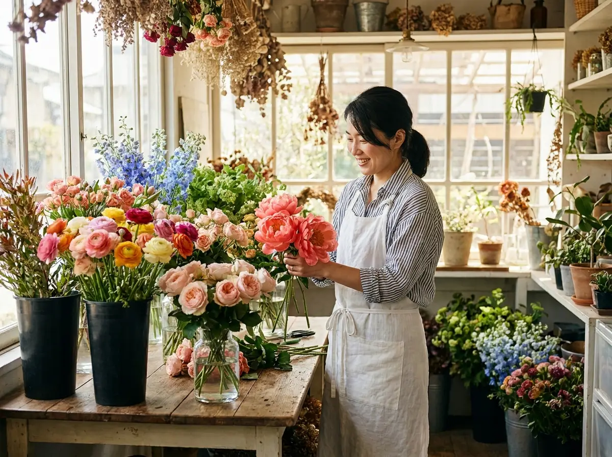
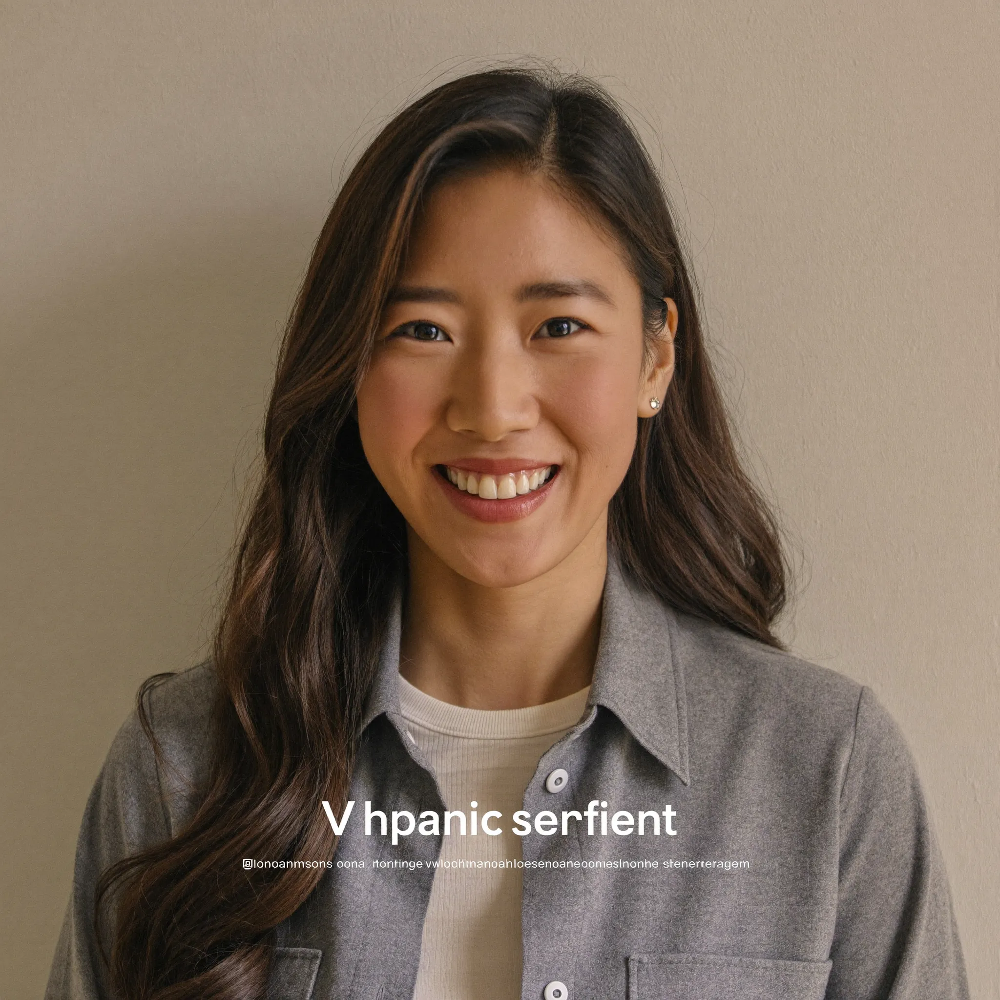
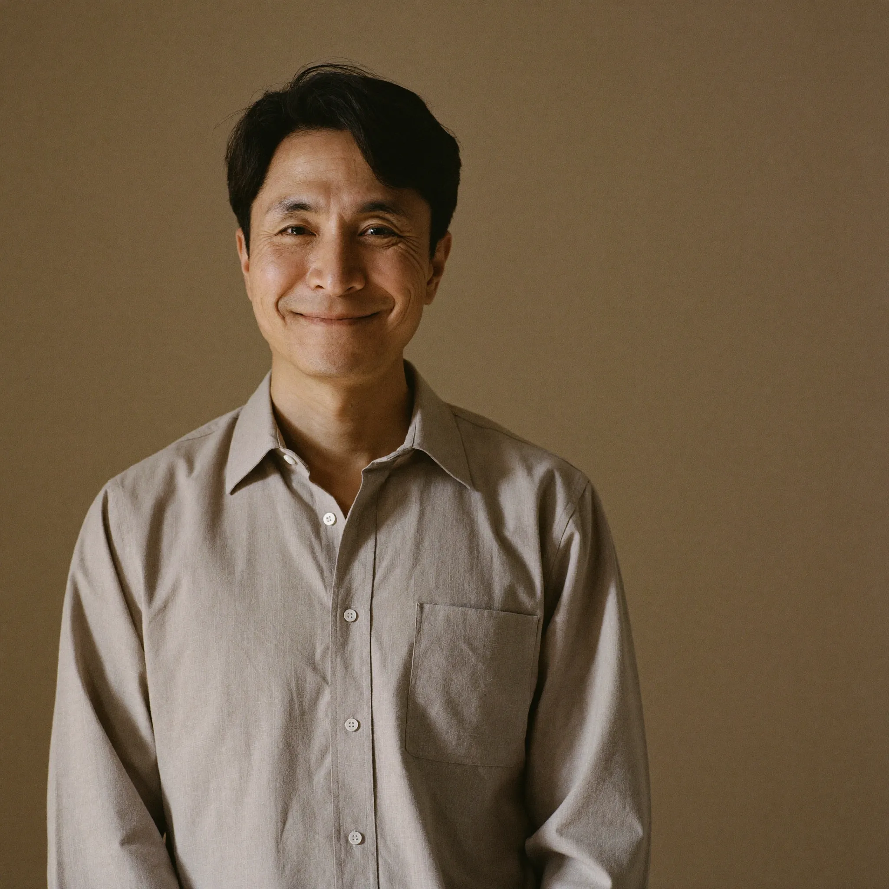
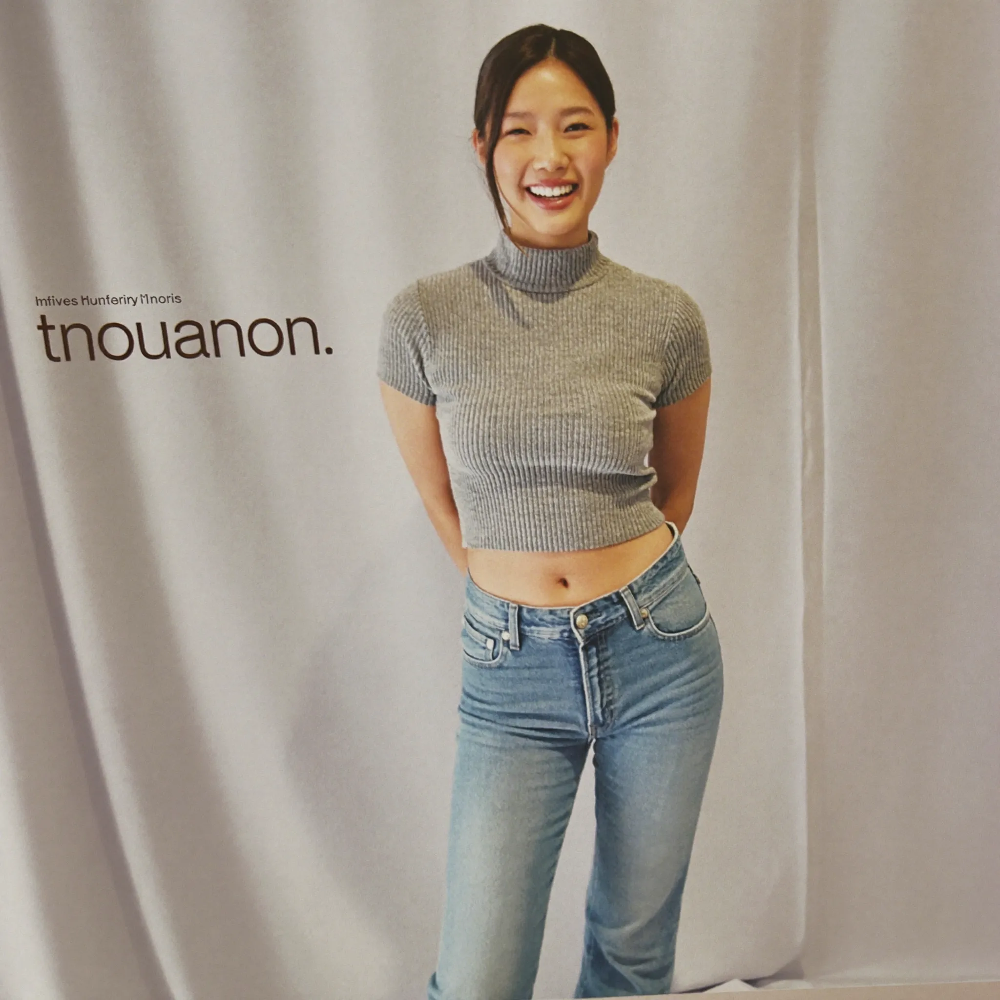

以自然為師，以花為語。青禾花藝相信，每一束精心設計的花，都能成為最真誠的情感橋樑，連結人與人之間最珍嫩的心意。

青禾花藝的故事，要從 2012 年說起。創辦人陳青萱帶著對花草的純粹熱愛，隻身前往荷蘭阿姆斯特丹，在世界知名的皇家花藝學校接受長達兩年的正規訓練。在歐洲，她學習到「植物極簡主義」的核心美學——讓花材說話，不過度裝飾，讓每株植物呈現最自然的姿態。
2014 年回台後，青萱在台中一家知名花坊累積了兩年實戰經驗，深入了解台灣花卉市場與在地花材的四季節奏。她發現台灣有豐富且美麗的在地花材，卻常常被忽略，過度仰賴進口的花種。這個觀察成為她創業的核心理念之一。
2016 年，青禾花藝在台中市西區民生路正式開業。「青禾」取自自然之色——青翠嫩綠，如初春新芽，象徵生命力與清新的開始。工作室以溫暖的木質調打造，讓每位踏入的客人都能感受到花草的療癒與自然的氣息。
至今，青禾花藝已服務超過 1,200 對新人、逾 300 家企業客戶，課程學員遍布台中各地。我們依然堅持每束花都由設計師親手製作，用時間和心意，換取每個笑容背後的感動。
青禾花藝的每一個決策，都源自我們對花藝、對自然、對客戶深刻的承諾。
優先選用台灣在地季節花材，支持本地花農，減少碳足跡，讓您的花束擁有台灣土地的溫度。
每束花由設計師親手製作，從花材挑選、修剪到包裝，拒絕量產，讓每束花都是獨一無二的作品。
深入了解每位客戶的需求、個性與場合，提供完全客製的設計方案，讓花成為最貼心的語言。
使用環保包裝紙，減少塑膠使用，鼓勵花材廢料堆肥，以實際行動守護我們深愛的自然環境。
每一朵花背後，都有一雙充滿熱情的手。我們的設計師團隊，是青禾花藝最珍貴的資產。



我們以嚴謹的態度追求專業成長，每一張認證都代表我們對花藝品質的堅持。